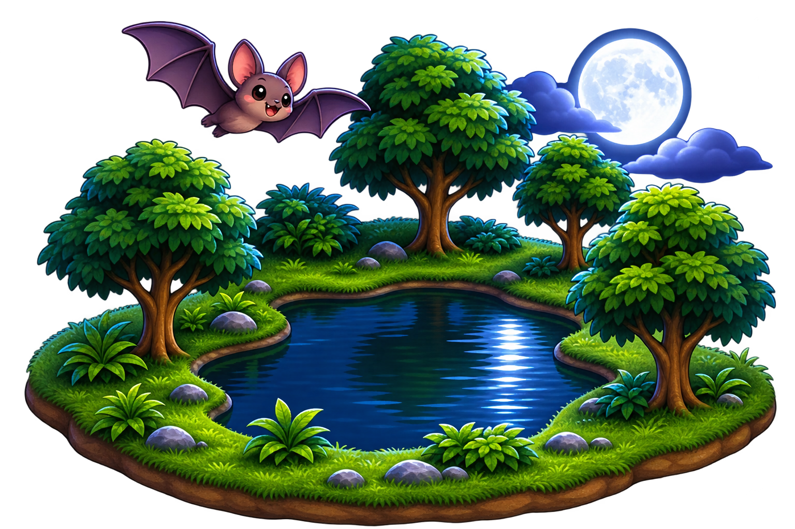

Los héroes que vuelan de noche
Cuando cae la noche, unos héroes salen para ayudar a mantener viva la selva. Descubramos qué es lo que nos tiene guardado la naturaleza.

Cuando cae la noche, unos héroes salen para ayudar a mantener viva la selva. Descubramos qué es lo que nos tiene guardado la naturaleza.
